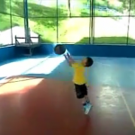

Cia. Ex-sedentário
vamo, vamo, vamo…
Tenho o objetivo de perder peso e ganhar quilômetros e alegrias. Dentro desse objetivo vou batendo metas após metas sempre com o foco lá no futuro.
Sexta passada acabei não treinando por preguiça. Mas no sábado fiz um treino de mais de 6 Km em 48 minutos (fiquei admirado com meu próprio desempenho). No domingo participei da festa pessoal da Andrea, apesar do rítimo de caminhada, eu me mantive o tempo todo trotando pelos 53 minutos. Ajudou bastante na musculatura, tanto que na segunda ainda sentia dores. Na segunda feira, apenas fiz uma caminhada de 30 minutos, voltando do trabalho.
Ontem mesmo, fiz minha inscrição para a XIV Troféu cidade de São Paulo Carrrefour Viver 10 Km. No ano passado eu fiz esta prova na distância de 6 Km, junto com meu sogro. Foi bem divertida e depois dela eu entrei num estado que gosto de chamar de “preparação”. Se ninguém se inscrever, vou acabar correndo sozinho… Então, vamos ao, que me sigam os bons… Vamo, vamo, vamo…
PS.: Não deixem de ler o post mais esperado da São Silvestre Baleias.
Treino de sábado ( Oitavo Treino – Mto Sol )
http://www.mapmyrun.com/routes/view/27123134
Domingo – Descanso … Porém fiz ajudei em uma mudança que valeu por uns 40 min de corrida …
Segunda – De volta aos treinos … Nono Treino
Distancia = 5.6km
Tempo total = 42:00 min
min/km = 7:30
http://www.mapmyrun.com/routes/view/27123562
Hoje foi uma marca importante: Passei dos 5k, estou inteiro e o tempo acredito que foi muito bom para mim !
Mais um dia que to FELIZ !!!!!!!!!!!!!!!!!!!!!!!!!!!!!!!!!!!!!!!!!!!!!!!!!!!!!!!!!!!!!!!!!!!!!!!!!!!!!!!!!!!!!!!!!!!!!!!!!!!!!!!!!!!!!!!!!!!!!!!!!!!!
Vivemos duas metades do tempo de uma vida que tem como divisor o HOJE, e que são exatamente o futuro e o passado.
Não há como ter esse equilíbrio em termos quantitativos, pois o futuro será cada vez menor do que o passado em sua medida temporal. Devemos tentar equalizar essas parcelas de vida de outra forma, ou seja, em termos qualitativos.
Vou tentar fazer isso: quero que a qualidade do tempo que tenho à frente seja melhor e maior daquela que consegui ter até agora e, penso eu que um bom caminho será a escolha dos verbos que passarei a conjugar mais, em substituição àqueles que tentarei conjugar menos.
Então me ocorrem alguns de imediato:
DIVIDIR em vez de CONCENTRAR;
DOAR em vez de ACUMULAR;
INCENTIVAR em vez de CRITICAR;
FAZER em vez de COBRAR;
PEDIR em vez de MANDAR;
ENSINAR em vez de CONDENAR;
PRESTIGIAR em vez de SE OMITIR;
COMPARECER em vez de ACOMODAR;
DIZER em vez de CALAR;
ESQUECER em vez de ODIAR;
RESPEITAR em vez de IGNORAR;
RIR em vez de PRAGUEJAR;
SORRIR em vez de DESDENHAR;
SONHAR em vez de ESTACIONAR; e
VIVER em vez de MORRER.
E se conseguir fazer isso com respeito ao próximo, ao coletivo e, com amor, generosidade e desprendimento, certamente terei contribuído para a melhor qualidade de vida dos que me cercam, única forma possível de pretender que a minha própria vida tenha mais qualidade e sentido.
Sei que é mais fácil falar do que por em prática, assim como também sei que não há nenhuma chance de se mudar o que quer que seja senão dando o primeiro passo. E este, asseguro, estou dando.
Desejo uma linda semana e que a solidariedade, o respeito e o amor sobrepujem o ódio, os preconceitos e as desigualdades.
Caminhada de 5k da O2…ontem, domingo 16 de janeiro de excelente 2011.
Estava tudo certo para a prova de 5k do Sesc dia 16 de janeiro. Perdemos( eu e Alex ) a inscrição…isso na terça a tarde.
Na terça a noite o Alex me manda um sms dizendo pra eu ler seu post, q tinha feito uma surpresa. Só li na quarta de manhã, e aí vi q tinha inscrito na prova d 5k da O2 e q coinscidentemente seria no domingo tb…Nossa, fiquei mega feliz…
Mega feliz e tensa ao mesmo tempo, com direito a mau humor e deselegancias com o Alex…kkkkkkkk…estava uma pilha…com medoooooooooooooooooooooooooooooooooooooooooooo.
Então treinamos na quinta, choveu, enxarcou meu tenis e não secou pra domingo…
Não deu tempo d comprar um tenis apropriado, então tive q ir com meu tenizinho d passeio…kkkk…
Nossa, d sábado pra domingo não dormi, acordei mais preocupada ainda, o Alex querendo me animar e eu não dava um sorriso….kkkkkkkkkk
Chegando lá, já comecei a sentir a ótima vibração, cheio d gente bonita e disposta…o Alex tirando fotos e eu ainda marrenta…
Começamos a sair do lugar e imediatamente senti fortíssimas dores no tibial anterior e extensor longo dos dedos…nossa, juro, estava insuportável continuar…queimava…
O Alex sempre me animando e eu com essa dor, nada d rir ou d falar.
Insisti, me concentrei no objetivo e qdo foi mais ou menos nos 3k, parou d doer, inacreditável.
Dos 3 aos 5 sem dor foi melhor, aí comecei a sorrir e acreditar mais.
Uma delícia estar no meio dos atletas, aquela vibração, sentir a respiração, ver o esforço, enfim, é outro mundo.
A cada k q passava, o Alex me incentivava…ah se não fosse o Alex…ele fez questão d me acompanhar nessa estréia…amuuuuuuuuuuu
Gente, finalmente cheguei em longos e lindos 53 MINUTOS…uhu…eu falava o tempo todo pro Alex( qdo comecei a falar…kkkk…) q queria fazer em menos d uma hora ele falava q o importante é terminar.
Terminei mega feliz.Ganhei minha primeira medalha, primeira d muitassssssssssssss.
Pro domingo ficar mais lindo, as cçs foram passear na praia com vovo Carlos e vovó Nasidi, chegaram felizes e bronzeadinhos, lindos. O Alex achou uma música q eu queria baixar faz tempo e não sabia quem cantava e a noite fomos ao niver da filha da minha amiga Alessandra q gosto tanto.
Pronto, esse foi meu mágico domingo.
Ah, lembra do meu tenizinho de passeio que fiz a prova? Então, é meu sapatinho da sorte..
Hoje estou com uma dorzinha bem leve, gostosa d sentir…kkkkkkkkk
E foi assim…tudo deu certo e DORMIMOS FELIZES PARA SEMPRE…
brigaduuuuuuuuuuuuuuuuuuuuuuuuuuuuuuuu…vamo…vamo…vamo…
PS: logo, logo, ponho as fotos…
Primeiro gostaria de deixar meus parabéns para o SESC Santo Amaro pela excelente prova.
A largada seria às 8h e como a prova fica pertinho de casa acordei às 7h tomei café apressei a Paula e saímos, não foi difícil encontrar lugar pra estacionar, banheiros próximos a largada em quantidade o suficiente para os 1.200 corredores 500 caminhantes, na saída do banheiro tinha lugar pra lavar as mão um LUXO rs, no kit veio uma sacola dessa ecologicamente correta e uma camiseta feito de garrafa pet, a medalha entregaram depois da corrida muito bonita por sinal, os 10km pela marginal pinheiros também foi super organizado logo que terminei a prova recebo em meu celular os parabéns com o tempo bruto e liquido.
E o preço 60, 70 ou 80 reais? Não, foram apenas 15 reais para comerciário e 30 reais para quem não é, os caminhantes pagaram 7 e 15 reais nessas mesmas condições.
Meu tempo foi 48min e 12seg, demorei 30seg a mais que no ano passado as maratonas me deixaram lento, está sendo difícil correr abaixo dos 5min/km ache que agora vai.
Dados da corrida no GPS: http://connect.garmin.com/player/63799058
Agora estou prestando atenção e pegando os papeis que me entregam de corridas menores tem uma que fiquei curioso 30reais mais 1kg de alimento eles vão entregar 70 troféus para os primeiros homens e 30 para as primeiras mulheres.
Essa será mais uma corrida fazendo mais com menos.
http://www.atletasdobem.com.br/


Abraço e vamo…vamo…vamo…
Hoje foi o setimo treino consecutivo. Bati 5km em 42 minutos …..
TO FELIZ PRA C*********
ontem treinei com o alex por 30 minutos na chuvaaaaaaaaaaaaaaaa…kkkkkkkkkkkkkkkk…no começo fiquei com medo depois foi uma delicia…kkkkkkkkkkkkkkkkkkk…desistir nunca…vamo…vamo…vamo…

Como relatei no post da São Silvestre, em 2010 eu me redescobri e uma redescoberta foi a de querer me tornar criança novamente. No sentido da felicidade pelas coisas simples. Nós adultos complicamos demais quando o assunto é encontrar a felicidade. Buscamos o álcool (para citar), compras, status, com o objetivo de alcançar a felicidade. E no final das contas é bem complicado. As crianças não, se divertem com uma caixa de papelão. Acho que a corrida me trouxe um pouco disso, a diversão por si só. Veja quantos relatos de corredores se divertindo fazendo treinos sem relógio. Eu particularmente, as vezes esqueço de iniciar, ou parar o cronômetro. É a alegria se materializando apenas por curtir o momento.
No último domingo a tarde, levei meu filho para brincar na quadra do lado de casa, levamos a bola de basquete. A cesta sempre foi alta para o Maurício e as tentativas anteriores sempre foram frustrantes, mas neste domingo, a força dele já era suficiente para a bola entrar na cesta. Catei o celular e vamos filmar:
A alegria dele de ter feito as cestas era o equivalente ao meu de ter terminado a São Silvestre. Continuamos a jogar basquete e alguns meninos apareceram na quadra, “tio posso jogar?”, e deixei, formamos 2 times, 3 crianças (maiores que o Mauô) contra eu e o Mauô. Depois de 10 minutos, aparece um vizinho meu que falou: “Você está louco de tentar acompanhar as crianças”. Desprezei o comentário e continuei, depois de uns 30 minutos, comecei a sentir dor no fígado. Hehehehe, pensei comigo, peguei pesado… Mas me diverti muito, correndo e tentando roubar a bola… “Mas tio, você é grande, você não pode fazer isso”, esta frase me fez pensar um pouquinho. Porque adulto não pode se comportar como criança? E continuei rindo e brincando. Foi muito divertido. Pena que no meu atual estado “kilogramétrico”, fica difícil continuar a brincadeira por muito tempo.
Segunda, fiz uma caminhada de quase 5 Km por 60 minutos, voltando do trabalho, com roupa social e mochila das costas.
Terça, na hora do almoço, aceitei o chamado da Moça e fui para “rodar” na quadra. As crianças foram junto, e alternei entre trotes e brincadeiras com a bola de basquete e corridas com as crianças. O meu sobrinho Pedro (11 anos) estava junto, perguntei se queria que o inscreve-se na próxima corrida infantil e ele topou. Olha eu influênciando… hehehehe. Estar com a família foi muito bom, nem percebi que estava rodando (que normalmente considero chato).
Quarta, como diz a Ivana, com tanta água caindo, ficamos de molho! Acabei indo pro shopping comer… hahahaha
Ontem, caminhei voltando do trabalho por 30 minutos e depois a Moça me chamou para caminhar, avisei, tem uma nuvem preta lá fora, acho que ela não me escutou e continuou a vestir a roupa de caminhada, me troquei também e fomos para a rua. Com 10 minutos de caminhada, umas gotas do céu começaram a cair, continuamos …”Não vai ser uma chuvinha que vai nos desanimar”… Mas derrepente. O mundo começou a cair sobre nossas cabeças. Era balde d’água sobre a cabeça, era impossível continuar e voltamos. Mas a esta altura estávamos longe de casa. Depois vir a saber que a chuva alagou vários pontos do ABC. A Andrea queria se abrigar, mas eu tinha receio de parar e o corpo esfriar, já estávamos completamente molhados. Os pingos duros (como diz a Moça) doiam a cabeça, enquanto que a água impedia a gente de enchergar a calçada. Foi punk…. E MUITO DIVERTIDO. Abria os braços e falava: “Manda mais água!”
Me senti como criança, quando minha mãe deixava brincar na chuva (que era raro, hehehe). A sensação foi muito boa. Quase chegando em casa completamente encharcado. Vimos uns moleques jogando futebol em um gramado “empiscinado”. Comentei com a Moça: “Olha lá como é divertido”. Foram apenas 30 minutos de caminhada dentro d’água, mas pareceu uma eternidade. Em casa, torci a roupa, coloquei no varal e corri para um banho quentinho e demorado. Amei tudo isso!
Acabei me empolgando na hora do almoço e sai pra caminhar. Resultado, 40 minutos bem caminhados e mais de 2km
Agora a noite mais um treino legal, choveu cerca de 15 minutos dos 33 debaixo de chuva . NÃO TEM TEMPO RUIM MAIS PRA MIM !!! rssssssss
http://www.mapmyrun.com/routes/view/26939150
http://www.mapmyrun.com/routes/view/26954222
P.S Não contei os 20 minutos de caminhada da empresa até a estação da Mooca. hehehehehehehe
Treino leve hoje para não me desgastar bem no meio da semana.
.jpg "DSC01735 (1024x576)")
.jpg "DSC01746 (1024x576)")
.jpg "DSC01827 (1024x576)")
.jpg "DSC01938 (1024x576)")
.jpg "DSC01949 (1024x576)")


Nós somos 100 Juízo
Nós somos Baleias
Últimos comentários